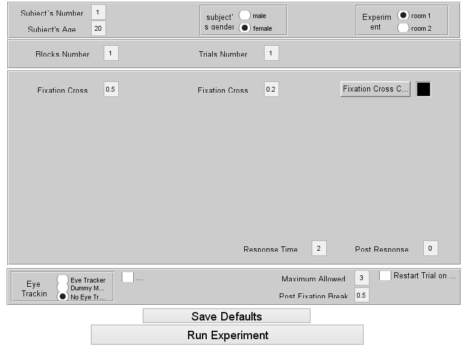

Contents
function template1()
Overview
This function is a framework for building experiments for psychtoolbox. Three main sections:
- Experiment Definitions
- GUI
- Experiment function - called via the gui's [run experiment] button.
---------------------------------------------------------------------------------------------------------------------------------------------------------------------------------------------------------------------------
The experiment function is broken up to logical stages that make up the experiment's workflow: ( EDIT marks stages needed to be edited by the programmer)
- Turn on psychtoolbox view - turnOnPTBView .
- Initialize biosemi and the eyetracker and start recording - initializeGear .
- Build the randomized conditions matrix conditions_mat - randomizeConditions : EDIT
- Initialize the data record object EXPDATA - initializeDataRecord : EDIT .
- Load messages and stimuli .png (loads into the struct resources) - scanMessages , loadResources : EDIT .
- Run the experiment - runBlocks: EDIT . this function contains a recommended preliminary code.
- Save all the data and shut down the recording - terminateExp : in the event of an error during the experiment, terminateExp is called before the experiment shuts down.
---------------------------------------------------------------------------------------------------------------------------------------------------------------------------------------------------------------------------
At the end of the template you will find miscellaneous utility functions:
- runCalibrationQuery - displays a screen to query the experimenter whether to perform an eye tracker calibration.
- calibrateEyeTracker - calls the eyelink calibration routine.
- echo - sends a trigger if the biosemi is active or an eyelink message if only the eyetracker is active.
- sendEyelinkMsg - sends an eyelink message to be recorded on the .edf file.
- sendTrigger - sends a trigger to be recorded both on the .bdf file and on the .edf file.
- pixels2vAngles - converts pixels units to visual degrees units.
- vAngles2pixels - converts visual degrees units to pixels units.
- defineTextFormat - defines psychtoolbox's text format and text size.
- drawImageInstructions - displays a .png image on full screen.
- displayTimedTextures - displays textures for a set amount of time.
- drawFixationCircleWithAnulous - calls psychtoolbox's DrawTextures for two concentric filled circles in the middle of the screen (does not flip).
- drawFixationCross - calls psychtoolbox's DrawLines for a fixation cross in the middle of the screen (does not flip).
- drawFixationCrossAtPos - calls psychtoolbox's DrawLines for a fixation at a given location (does not flip).
- sampleGazeCoords - samples the gaze's x and y coordinates
- testFixationBreaking - tests whether the gaze's distance from the center of the screen exceeds the distance specified in the GUI as the maximum allowed.
- checkPauseReq - checks whether [esc] is pressed and pauses the experiment if it is, while showing a menu screen. can show a fixation cross during the display and can monitor [esc] key press and fixation breaks.
- KbCheckRB - checks whether a response box key is pressed.
% first and foremost: close all; sca;
Experiment Definitions
%experiment name EXPERIMENT_NAME= 'Template Experiment'; %folder constants GUI_XML_FILE= fullfile('guiXML.xml'); MSGS_FOLDER= fullfile('resources','instructions'); EXPDATA_SAVE_FOLDER= fullfile('data files'); WORKSPACE_SAVE_FOLDER= fullfile('data files', 'data pileups'); %lab room setup parameters definitions SUBJECT_DISTANCE_FROM_SCREEN= []; SCREEN_WIDTH= []; SCREEN_HEIGHT= []; %experiment's parameters definitions SELECTED_LAB= []; SUBJECT_NUMBER= []; SUBJECT_AGE= []; SUBJECT_GENDER= []; BLOCKS_NR_MULTIPLIER= []; TRIALS_NR_MULTIPLIER= []; FIXATION_CROSS_ARMS_LEN_IN_VANGLES= []; FIXATION_CROSS_ARMS_WIDTH_IN_VANGLES= []; FIXATION_CROSS_COLOR= []; RESPONSE_TIME_ALLOWED= []; POST_RESPONSE_DELAY= []; FORCE_FIXATION= []; POST_FIXATION_BREAK_DELAY= []; MAX_GAZE_DIST_FROM_CENTER_IN_VANGLES= []; EYE_TRACKING_METHOD= []; EEG= []; %experiment's parameters definitions - not included in the gui BACKGROUND_COLOR= [0.5 0.5 0.5]; EXPDATA_SAVE_FILE_NAME_PREFIX= 's'; EXPDATA_SAVE_FILE_NAME_SUFFIX= []; WORKSPACE_SAVE_FILE_NAME_PREFIX= 's'; WORKSPACE_SAVE_FILE_NAME_SUFFIX= []; EDF_FILE_NAME_PREFIX = 's'; EDF_FILE_NAME_SUFFIX= []; GAZE_SAMPLES_FOR_FIXATION_BREAKING_VERDICT= 10; function [level_value, staircaser_side]= staircaseFunc(level, staircaser_side) staircaser_side_i= (staircaser_side==ENUM_SIDE_RIGHT) + 1; level_value= GABOR_INITIAL_OPACITY(staircaser_side)*STAIRCASER_FUNC_DECLINE_RATE.^( STAIRCASER_FUNC_RESOLUTION*(1 - (level-STAIRCASER_FUNC_TRANSLATION(staircaser_side_i))) ); if level_value>GABOR_MAXIMAL_OPACITY level_value= GABOR_MAXIMAL_OPACITY; STAIRCASER_FUNC_TRANSLATION(staircaser_side_i)= STAIRCASER_FUNC_TRANSLATION(staircaser_side_i)-1; end end %psychtoolbox keyboard constants KBOARD_CODE_A = 65; KBOARD_CODE_B = 66; KBOARD_CODE_C = 67; KBOARD_CODE_D = 68; KBOARD_CODE_E = 69; KBOARD_CODE_F = 70; KBOARD_CODE_G = 71; KBOARD_CODE_H = 72; KBOARD_CODE_I = 73; KBOARD_CODE_J = 74; KBOARD_CODE_K = 75; KBOARD_CODE_L = 76; KBOARD_CODE_M = 77; KBOARD_CODE_N = 78; KBOARD_CODE_O = 79; KBOARD_CODE_P = 80; KBOARD_CODE_Q = 81; KBOARD_CODE_R = 82; KBOARD_CODE_S = 83; KBOARD_CODE_T = 84; KBOARD_CODE_U = 85; KBOARD_CODE_V = 86; KBOARD_CODE_W = 87; KBOARD_CODE_X = 88; KBOARD_CODE_Y = 89; KBOARD_CODE_Z = 90; KBOARD_CODE_ESC = 27; KBOARD_CODE_SPACE = 32; KBOARD_CODE_FRONT_SLASH= 191; KBOARD_CODE_LEFT=37; KBOARD_CODE_UP=38; KBOARD_CODE_RIGHT=39; KBOARD_CODE_DOWN=40; KBOARD_CODE_0= 48; KBOARD_CODE_9= 57; KBOARD_CODE_NUMPAD0= 96; KBOARD_CODE_NUMPAD9= 105; %data record object EXPDATA= []; %experiment extra gear objects BIOSEMI= []; BIO_LPT_ADRESS= []; EL_PARAMS= []; FIXATION_MONITOR= []; RB_ADDRESS = hex2dec('D011'); %on room A computer %triggers constants BIOSEMI_CODE_START= 255; BIOSEMI_CODE_SLEEP= 0; BIOSEMI_CODE_END= 254; TRIGGERS_RECORDING_STARTED= 66; TRIGGERS_RECORDING_ENDED= 67; TRIGGERS_START_BREAK= 68; TRIGGERS_END_BREAK= 69; TRIGGERS_EYE_TRACKER_CALIBRATION_STARTED= 99; TRIGGERS_EYE_TRACKER_CALIBRATION_ENDED= 98; %is the experiment supposed to be running? (this flag is assigned a false %value when the experiment is aborted, for instance by pressing esc and the 'y') IS_EXP_GO= true; %enumerables ENUM_EYE_TRACKING_NO_TRACKING= ExperimentGuiBuilder.ENUM_EYE_TRACKING_NO_TRACKING; ENUM_EYE_TRACKING_DUMMY_MODE= ExperimentGuiBuilder.ENUM_EYE_TRACKING_DUMMY_MODE; ENUM_EYE_TRACKING_EYE_TRACKER= ExperimentGuiBuilder.ENUM_EYE_TRACKING_EYE_TRACKER;
GUI
% construct a gui building class object gui_builder= ExperimentGuiBuilder(EXPERIMENT_NAME, @runExpFunc, GUI_XML_FILE); %PLACE YOUR UICONTROLS DEFINITIONS HERE %-------------------------------------- %fixation cross uicontrols gui_builder.uicontrolReadNum(1, 'Fixation Cross Arms Length', ExperimentGuiBuilder.ENUM_VERIFY_POSITIVE_REAL); gui_builder.uicontrolReadNum(2, 'Fixation Cross Arms Width', ExperimentGuiBuilder.ENUM_VERIFY_POSITIVE_REAL); gui_builder.uicontrolReadColor(3, 'Fixation Cross Color'); % ... %-------------------------------------- % display the gui gui_builder.turnOn(); %the [run experiment] callback function runExpFunc(~, ~) is_file_unique= verifyFileUniqueness([EXPDATA_SAVE_FOLDER, EXPDATA_SAVE_FILE_NAME_PREFIX, num2str(SUBJECT_NUMBER), EXPDATA_SAVE_FILE_NAME_SUFFIX, '.mat']); if (~is_file_unique) return; end is_file_unique= verifyFileUniqueness([EDF_FILE_NAME_PREFIX, num2str(SUBJECT_NUMBER), EDF_FILE_NAME_SUFFIX, '.edf']); if (~is_file_unique) return; end %extract the experiment parameters values from the gui's uicontrols common_params_values= gui_builder.getCommonParamsValues(); SUBJECT_DISTANCE_FROM_SCREEN= common_params_values{1}(1); SCREEN_WIDTH= common_params_values{1}(2); SCREEN_HEIGHT= common_params_values{1}(3); SUBJECT_NUMBER= common_params_values{2}; SUBJECT_AGE= common_params_values{3}; SUBJECT_GENDER= common_params_values{4}; BLOCKS_NR_MULTIPLIER= common_params_values{5}; TRIALS_NR_MULTIPLIER= common_params_values{6}; RESPONSE_TIME_ALLOWED= common_params_values{7}; POST_RESPONSE_DELAY= common_params_values{8}; FORCE_FIXATION= common_params_values{9}; POST_FIXATION_BREAK_DELAY= common_params_values{10}; MAX_GAZE_DIST_FROM_CENTER_IN_VANGLES= common_params_values{11}; EYE_TRACKING_METHOD= common_params_values{12}; EEG= common_params_values{13}; curr_exp_params_values= gui_builder.getCurrExpParamsValues(); FIXATION_CROSS_ARMS_LEN_IN_VANGLES= curr_exp_params_values{1}; FIXATION_CROSS_ARMS_WIDTH_IN_VANGLES= curr_exp_params_values{2}; FIXATION_CROSS_COLOR= curr_exp_params_values{3}; %hide the gui gui_builder.turnOff(); %run the experiment runExp(); function is_file_unique= verifyFileUniqueness(file_name) is_file_unique= true; if exist(file_name,'file') button = questdlg(['File "' file_name '" already exists. Replace?'],'Confirm save file name','OK','Cancel','Cancel'); switch button case 'OK' % keep going case 'Cancel' is_file_unique= false; end end end end
The Experiment Code
function runExp()
%try <<== uncomment when running the experiment for real %1. start psychtoolbox and save screen variables as globals [window, window_rect]= turnOnPTBView(); [window_center_x, window_center_y]= RectCenter(window_rect); window_center= [window_center_x, window_center_y]; fps = Screen('FrameRate', window); ifi = Screen('GetFlipInterval', window); waitframes= 1; %2. initialize the biosemi and the eye tracker MAX_GAZE_DIST_FROM_CENTER= round(vAngles2pixels(MAX_GAZE_DIST_FROM_CENTER_IN_VANGLES)); initializeGear(); %3. randomize experiment's conditions - EDIT [conditions_mat, TRIALS_NR_PER_BLOCK_VEC, BLOCKS_NR]= randomizeConditions(); %4. define experiment record variables - EDIT initializeDataRecord(); %convert globals' units from visual angles to pixels FIXATION_CIRCLE_INNER_RADIUS= round(vAngles2pixels(FIXATION_CIRCLE_INNER_RADIUS_IN_VANGLES)); FIXATION_CIRCLE_OUTER_RADIUS= round(vAngles2pixels(FIXATION_CIRCLE_OUTER_RADIUS_IN_VANGLES)); FIXATION_CROSS_ARMS_LEN= round(vAngles2pixels(FIXATION_CROSS_ARMS_LEN_IN_VANGLES)); FIXATION_CROSS_ARMS_WIDTH= round(vAngles2pixels(FIXATION_CROSS_ARMS_WIDTH_IN_VANGLES)); %5. load stuff from files - EDIT msgs= scanMessages(); resources= loadResources(); %6. start running the experiment - EDIT runBlocks(); %7. close everything nicely... terminateExp(); %uncomment the catch block when running the experiment for real %-------------------------------------------------------------- %catch exception % terminateExp(); % disp(exception.message); % for call_depth= 1:length(exception.stack) % disp(exception.stack(call_depth)); % end %end % FUNCTIONS IMPLEMENTATIONS % stage 1 function [window, window_rect]= turnOnPTBView() PsychDefaultSetup(2); screens = Screen('Screens'); screen_i = max(screens); [window, window_rect] = PsychImaging('OpenWindow', screen_i, BACKGROUND_COLOR); Screen('BlendFunction', window, 'GL_SRC_ALPHA', 'GL_ONE_MINUS_SRC_ALPHA'); %HideCursor; end % stage 2 function initializeGear() if EYE_TRACKING_METHOD==ENUM_EYE_TRACKING_NO_TRACKING && ~EEG return; else if EYE_TRACKING_METHOD~=ENUM_EYE_TRACKING_NO_TRACKING %Initalize eyetracker disp('Initizlizing Eye Tracker...'); % Provide Eyelink with details about the graphics environment % and perform some initializations. The information is returned % in a structure that also contains useful defaults % and control codes (e.g. tracker state bit and Eyelink key values). EL_PARAMS= EyelinkInitDefaults(window); if ~EyelinkInit(EYE_TRACKING_METHOD==ENUM_EYE_TRACKING_DUMMY_MODE, 1) terminateExp(); return; end [~ ,vs]=Eyelink('GetTrackerVersion'); fprintf('Running experiment on a ''%s'' tracker.\n', vs ); % make sure that we get gaze data from the Eyelink Eyelink('Command', 'link_sample_data = LEFT,RIGHT,GAZE,AREA'); % open file to record data to status = Eyelink('openfile', 'eye.edf'); if status ~= 0 disp(['Error opening eyelink file: error code ' num2str(status) '.']); terminateExp(); return; end %assign preferences values elSetup(window_rect(3),window_rect(4)); %query the experimenter for whether to perform calibration runCalibrationQuery(); %start recording eyetracker data Eyelink('StartRecording'); if EYE_TRACKING_METHOD==ENUM_EYE_TRACKING_EYE_TRACKER eye_used = Eyelink('EyeAvailable'); % get eye that's tracked if eye_used == EL_PARAMS.BINOCULAR; % if both eyes are tracked eye_used = EL_PARAMS.RIGHT_EYE; % use right eye end disp(['Eye used: ' num2str(eye_used)]); end %construct a fixation monitor class object FIXATION_MONITOR= FixationMonitor(EL_PARAMS, MAX_GAZE_DIST_FROM_CENTER, window_center, GAZE_SAMPLES_FOR_FIXATION_BREAKING_VERDICT); end if EEG %initialize biosemi [BIOSEMI, BIO_LPT_ADRESS]=init_bio; io32(BIOSEMI,BIO_LPT_ADRESS, BIOSEMI_CODE_SLEEP); %start recording eeg data and send a synchronization trigger io32(BIOSEMI,BIO_LPT_ADRESS,BIOSEMI_CODE_START); WaitSecs(.1); io32(BIOSEMI,BIO_LPT_ADRESS,BIOSEMI_CODE_SLEEP); WaitSecs(.1); io32(BIOSEMI,BIO_LPT_ADRESS,TRIGGERS_RECORDING_STARTED); WaitSecs(0.1); io32(BIOSEMI,BIO_LPT_ADRESS,BIOSEMI_CODE_SLEEP); WaitSecs(0.1); io32(BIOSEMI,BIO_LPT_ADRESS,TRIGGERS_RECORDING_STARTED); WaitSecs(0.1); io32(BIOSEMI,BIO_LPT_ADRESS,BIOSEMI_CODE_SLEEP); WaitSecs(0.1); io32(BIOSEMI,BIO_LPT_ADRESS,TRIGGERS_RECORDING_STARTED); WaitSecs(0.1); io32(BIOSEMI,BIO_LPT_ADRESS,BIOSEMI_CODE_SLEEP); WaitSecs(0.1); end end end % stage 3 function initializeDataRecord() EXPDATA.info.general_info.session_time = datestr(now); EXPDATA.info.general_info.experiment_duration= []; EXPDATA.info.subject_info.subject_number = SUBJECT_NUMBER; EXPDATA.info.subject_info.subject_gender = SUBJECT_GENDER; EXPDATA.info.subject_info.subject_age = SUBJECT_AGE; EXPDATA.info.lab_setup.lab_room= SELECTED_LAB; EXPDATA.info.lab_setup.subject_distance_from_screen_in_cm= SUBJECT_DISTANCE_FROM_SCREEN; EXPDATA.info.lab_setup.screen_width_in_cm= SCREEN_WIDTH; EXPDATA.info.lab_setup.screen_width_in_pixels= window_rect(3); EXPDATA.info.lab_setup.screen_width_in_visual_degrees= pixels2vAngles(window_rect(3)); EXPDATA.info.lab_setup.screen_height_in_cm= SCREEN_HEIGHT; EXPDATA.info.lab_setup.screen_height_in_pixels= window_rect(4); EXPDATA.info.lab_setup.screen_height_in_visual_degrees= pixels2vAngles(window_rect(4)); EXPDATA.info.lab_setup.pixels_per_vdegree= EXPDATA.info.gear_info.screen_width_in_pixels/EXPDATA.info.gear_info.screen_width_in_visual_degrees; EXPDATA.info.experiment_parameters.time_limit_for_a_response= RESPONSE_TIME_ALLOWED; for trial_i= 1:(BLOCKS_NR*sum(TRIALS_NR_PER_BLOCK_VEC)) EXPDATA.trials(trial_i).block_number = []; EXPDATA.trials(trial_i).trial_number = []; EXPDATA.trials(trial_i).trial_duration= []; EXPDATA.trials(trial_i).trial_net_duration= []; EXPDATA.trials(trial_i).response_time= []; EXPDATA.trials(trial_i).subject_response= []; EXPDATA.trials(trial_i).response_result= []; end for block_i= 1:BLOCKS_NR end end % stage 4 function msgs= scanMessages() msgs= loadImagesFromFolder(MSGS_FOLDER,'jpg'); end function resources= loadResources() end % stage 5 %conditions_mat columns %---------------------- %1: ... %2: ... %3: ... % ... function [conditions_mat, trials_nr_per_block_vec, blocks_nr]= randomizeConditions() end % stage 6 function runBlocks() %display the openning instructions screen drawImageInstructions(msgs{1}); exp_start_vbl= KbWait([],2); %start the blocks loop total_experiment_pauses_duration= 0; for block_i= 1:BLOCKS_NR %display the screen that precedes every block drawImageInstructions(msgs{2}); KbWait([],2); runCalibrationQuery(); %compute the index of the first trial of the current block block_first_trial_i= sum(TRIALS_NR_PER_BLOCK_VEC(1:(block_i-1)))+1; trials_nr_on_curr_block= TRIALS_NR_PER_BLOCK_VEC(block_i); for trial_inside_block_i= 1:trials_nr_on_curr_block trial_overall_i= block_first_trial_i+trial_inside_block_i-1; EXPDATA.trials(trial_overall_i).block_number= block_i; EXPDATA.trials(trial_overall_i).trial_number= trial_overall_i; is_curr_iteration_the_first_one= true; curr_trial_pause_duration= 0; % the trial loop. will repeat running trials until a trial is completed successfuly. a failure to complete a trial % in the context here is due to a fixation break, a too early response, etc... while (1) trial_vector= conditions_mat(trial_overall_i,:); [trial_start_vbl, trial_end_vbl, response_result, curr_trial_run_pause_duration, staircaser, was_response_made_too_early, was_fixation_broken]= runTrial(trial_vector, trial_overall_i, staircaser); curr_trial_pause_duration= curr_trial_pause_duration + curr_trial_run_pause_duration; %is_curr_iteration_the_first_one==true if this is the first attempt to complete the trial. %if this is the case, we record the start time of this trial only as the true start time of the current trial in the block. if (is_curr_iteration_the_first_one) is_curr_iteration_the_first_one= false; first_trial_run_start_vbl= trial_start_vbl; end if (was_fixation_broken) txt = '!!!äúî÷ãåú ðùáøä'; DrawFormattedText(window,txt,window_center_x-100,'center',[0 0 0],[],[],[],2); Screen('Flip', window, trial_end_vbl + (waitframes - 0.5)*ifi); WaitSecs(POST_FIXATION_BREAK_DELAY); if (trial_inside_block_i<trials_nr_on_curr_block) trial_params_to_swap_with= trial_overall_i + randi(trials_nr_on_curr_block-trial_inside_block_i) ; conditions_mat([trial_overall_i,trial_params_to_swap_with],:)= conditions_mat([trial_params_to_swap_with, trial_overall_i],:); end elseif was_response_made_too_early txt = '!!!úâåáä îå÷ãîú'; DrawFormattedText(window,txt,window_center_x-100,'center',[0 0 0],[],[],[],2); Screen('Flip', window, trial_end_vbl + (waitframes - 0.5)*ifi); WaitSecs(POST_FIXATION_BREAK_DELAY); if (trial_inside_block_i<trials_nr_on_curr_block) trial_params_to_swap_with= trial_overall_i + randi(trials_nr_on_curr_block-trial_inside_block_i) ; conditions_mat([trial_overall_i,trial_params_to_swap_with],:)= conditions_mat([trial_params_to_swap_with, trial_overall_i],:); end else %if the trial completed successfuly, break trial's loop. break; end end total_experiment_pauses_duration= total_experiment_pauses_duration + curr_trial_pause_duration; if (~IS_EXP_GO) EXPDATA.info.general_info.exp_duration= trial_end_vbl - exp_start_vbl; EXPDATA.info.general_info.exp_net_duration= trial_end_vbl - exp_start_vbl - total_experiment_pauses_duration; break; end EXPDATA.trials(trial_overall_i).trial_start_time= first_trial_run_start_vbl - exp_start_vbl; EXPDATA.trials(trial_overall_i).trial_duration= trial_end_vbl - first_trial_run_start_vbl; EXPDATA.trials(trial_overall_i).trial_net_duration= trial_end_vbl - first_trial_run_start_vbl - curr_trial_pause_duration; end if (~IS_EXP_GO) break; end end if (~IS_EXP_GO) return; end %display the screen for the end of the experiment exp_end_vbl= drawImageInstructions(msgs{4}); EXPDATA.info.general_info.exp_duration= exp_end_vbl - exp_start_vbl; EXPDATA.info.general_info.exp_net_duration= exp_end_vbl - exp_start_vbl- total_experiment_pauses_duration; KbWait([],2); % function runTrial - run a single trial sequence % --------------------------------------------------------------------------------------------------- % input: % * trial_params: a row from conditions_mat. % * trial_overall_i: the index of current trial (relative to % the entire experiment. % * staircaser: an instance of Staircaser class % % output: % * trial_start_vbl= the onset time of the first stimulus. % * trial_end_vbl= the end time of the last stimulus' display loop. % * response_result= true if the response was correct and false if it was not. % * pause_dur= the total time spent on the pause screen during the trial. % * staircaser_updated= the updated version of the Staircaser object. % * was_response_made_too_early= true if the subject made a response too early and false otherwise. % * was_fixation_broken= true if the subject broke fixation and false otherwise. % --------------------------------------------------------------------------------------------------- function [trial_start_vbl, trial_end_vbl, response_result, pause_dur, staircaser_updated, was_response_made_too_early, was_fixation_broken]= runTrial(trial_params, trial_overall_i, staircaser) % extract current trial's parameters % log trial's parameters % trial sequence end end % stage 7 function terminateExp() saveData(); %send a synchronization trigger if EEG io32(BIOSEMI,BIO_LPT_ADRESS,TRIGGERS_RECORDING_ENDED); WaitSecs(.1); io32(BIOSEMI,BIO_LPT_ADRESS,BIOSEMI_CODE_SLEEP); WaitSecs(.1); io32(BIOSEMI,BIO_LPT_ADRESS,TRIGGERS_RECORDING_ENDED); WaitSecs(.1); io32(BIOSEMI,BIO_LPT_ADRESS,BIOSEMI_CODE_SLEEP); WaitSecs(.1); io32(BIOSEMI,BIO_LPT_ADRESS,TRIGGERS_RECORDING_ENDED); WaitSecs(.1); io32(BIOSEMI,BIO_LPT_ADRESS,BIOSEMI_CODE_SLEEP); WaitSecs(3); end %stop the eyetracker if EYE_TRACKING_METHOD~=ENUM_EYE_TRACKING_NO_TRACKING Eyelink('StopRecording'); end %stop the biosemi recording and if EEG io32(BIOSEMI, BIO_LPT_ADRESS, BIOSEMI_CODE_END); end %save the eyetracker recording data if EYE_TRACKING_METHOD~=ENUM_EYE_TRACKING_NO_TRACKING % Retrieve Eyelink EDF file disp('Retrieving EDF file from eye-tracker.'); Eyelink('CloseFile'); stat = Eyelink('ReceiveFile','eye.edf'); if stat ~= 0 disp(['Error in retrieving EDF file: ' ,[EDF_FILE_NAME_PREFIX, num2str(SUBJECT_NUMBER), '.edf']]); end if ~isempty(EDF_FILE_NAME_SUFFIX) || ~strcmp(EDF_FILE_NAME_PREFIX,'eye') movefile('eye.edf', [EDF_FILE_NAME_PREFIX, num2str(SUBJECT_NUMBER), EDF_FILE_NAME_SUFFIX, '.edf']); end %Eyelink('Shutdown'); end ShowCursor; Screen('CloseAll'); % Give focus back to Matlab commandwindow; function saveData() %save data record save([EXPDATA_SAVE_FOLDER, EXPDATA_SAVE_FILE_NAME_PREFIX, num2str(SUBJECT_NUMBER), EXPDATA_SAVE_FILE_NAME_SUFFIX], 'EXPDATA'); %save pileup; save([WORKSPACE_SAVE_FOLDER, WORKSPACE_SAVE_FILE_NAME_PREFIX, num2str(SUBJECT_NUMBER), WORKSPACE_SAVE_FILE_NAME_SUFFIX]); end end
Miscelenious Utility Functions
function runCalibrationQuery() if (EYE_TRACKING_METHOD~=ENUM_EYE_TRACKING_NO_TRACKING) txt = 'Perform an eye-tracker calibration? Y/N'; Screen('FillRect', window, BACKGROUND_COLOR); DrawFormattedText(window,txt,'center','center',[0 0 0],[],[],[],2); Screen('Flip', window); while (1) [~,keyCodes] = KbWait; keyCodes = find(keyCodes); if ismember(keyCodes,KBOARD_CODE_Y) run_calibrate = true; break; elseif ismember(keyCodes,KBOARD_CODE_N) run_calibrate = false; break; end end if (run_calibrate) calibrateEyeTracker(); end end end function calibrateEyeTracker() if (EYE_TRACKING_METHOD~=ENUM_EYE_TRACKING_NO_TRACKING) %io32(BIOSEMI,BIO_LPT_ADRESS,TRIGGERS_EYE_TRACKER_CALIBRATION_STARTED); %WaitSecs(.005); %io32(BIOSEMI,BIO_LPT_ADRESS,BIOSEMI_CODE_SLEEP); EyelinkDoTrackerSetup(EL_PARAMS); [~, msg_str]= Eyelink('CalMessage'); disp(' '); disp('calibration statistics:'); disp('----------------------'); disp(msg_str); EyelinkDoDriftCorrection(EL_PARAMS); [~, msg_str]= Eyelink('CalMessage'); disp(' '); disp('drift correction statistics:'); disp('----------------------'); disp(msg_str); %io32(BIOSEMI,BIO_LPT_ADRESS,TRIGGERS_EYE_TRACKER_CALIBRATION_ENDED); %WaitSecs(.005); %io32(BIOSEMI,BIO_LPT_ADRESS,BIOSEMI_CODE_SLEEP); Eyelink('StartRecording'); end end function echo(trigger, eyelink_msg, varargin) if EEG sendTrigger(trigger); elseif EYE_TRACKING_METHOD~=ENUM_EYE_TRACKING_NO_TRACKING sendEyelinkMsg(eyelink_msg, varargin); end end function sendEyelinkMsg(msg, varargin) if EYE_TRACKING_METHOD==ENUM_EYE_TRACKING_NO_TRACKING return; end Eyelink('message', msg, varargin); end function sendTrigger(code, wait_secs) if EYE_TRACKING_METHOD==ENUM_EYE_TRACKING_NO_TRACKING && ~EEG return; end io32(BIOSEMI,BIO_LPT_ADRESS,code); if nargin==1 WaitSecs(.005); else WaitSecs(wait_secs); end io32(BIOSEMI,BIO_LPT_ADRESS,BIOSEMI_CODE_SLEEP); end function v_angle= pixels2vAngles(pixels) window_size= Screen('WindowSize', window); cm_per_pixels= SCREEN_WIDTH/window_size(1); v_angle= rad2deg(2*atan(((pixels/2)*cm_per_pixels)/SUBJECT_DISTANCE_FROM_SCREEN)); end function pixels= vAngles2pixels(v_angles) window_size= Screen('WindowSize', window); pixels_per_cm= window_size(1)/SCREEN_WIDTH; pixels= 2*SUBJECT_DISTANCE_FROM_SCREEN*tan(deg2rad(v_angles/2))*pixels_per_cm ; end function defineTextFormat(text_size, text_font) Screen('TextSize', window, text_size); Screen('TextFont', window, text_font); end function instructions_laid_down_vbl= drawImageInstructions(img) tex= Screen('MakeTexture', window, img); [window_width, window_height]= Screen('WindowSize',window); tex_rect= generateRect(window_center, [window_width, window_height]); Screen('DrawTextures', window, tex, [], tex_rect); instructions_laid_down_vbl= Screen('Flip', window); end function [textures_onset_vbl, pause_end_vbl, pause_duration_during_display, was_fixation_broken, was_key_pressed, vbl_of_last_retrace]= displayTimedTextures(show_fixation_cross, display_dur, verify_fixation, verify_key_press, trigger, vbl_of_last_retrace, textures, texture_rects, texture_angs, texture_opacities, texture_colors) pause_duration_during_display= 0; was_fixation_broken= false; was_key_pressed= false; elapsed_time= 0; is_curr_iteration_the_first= true; pause_end_vbl= -1; textures_onset_vbl= -1; if display_dur<=0 return; end ifi_start_vbl= vbl_of_last_retrace; while (elapsed_time<display_dur && IS_EXP_GO) if show_fixation_cross drawFixationCross(FIXATION_CROSS_ARMS_LEN, FIXATION_CROSS_ARMS_WIDTH, FIXATION_CROSS_COLOR); end if (nargin>=7) for tex_i=1:numel(textures) Screen('DrawTextures', window, textures{tex_i}, [], texture_rects{tex_i}, texture_angs{tex_i}, [], texture_opacities{tex_i}, texture_colors{tex_i}); end end ifi_end_vbl= Screen('Flip', window, ifi_start_vbl + (waitframes - 0.5) * ifi); if (is_curr_iteration_the_first) textures_onset_vbl= ifi_end_vbl; if (nargin>=4 && numel(trigger)==1) sendTrigger(trigger); end is_curr_iteration_the_first= false; end elapsed_time= GetSecs()-textures_onset_vbl; if (verify_fixation) was_fixation_broken= testFixationBreaking(); if (was_fixation_broken) sendTrigger(TRIGGERS_FIXATION_BROKEN); break; end end if (verify_key_press) [was_key_pressed , ~, ~]= KbCheckRB(); if (was_key_pressed) sendTrigger(TRIGGERS_SUBJECT_RESPONDED_TOO_EARLY); break; end end [pause_duration, pause_end_vbl]= checkPauseReq(); if (pause_duration>0) pause_duration_during_display= pause_duration_during_display + pause_duration; ifi_start_vbl= pause_end_vbl; else ifi_start_vbl= ifi_end_vbl; end end vbl_of_last_retrace= ifi_end_vbl; end function drawFixationCircleWithAnulous(circle_tex, inner_radius, inner_color, outer_radius, outer_color) inner_rect= generateRect(window_center, 2*[inner_radius, inner_radius]); outer_rect= generateRect(window_center, 2*[outer_radius, outer_radius]); rects= [outer_rect; inner_rect]'; colors= [outer_color; inner_color]'; Screen('DrawTextures', window, circle_tex, [], rects, [], [], [], colors); end function drawFixationCross(arms_len, arms_width, color) cross_cords_x= [arms_len, -arms_len, 0, 0]; cross_cords_y= [0, 0, arms_len, -arms_len]; cross_cords= [cross_cords_x ; cross_cords_y]; Screen('DrawLines', window, cross_cords, arms_width, color, [window_center_x, window_center_y], 2); end function drawFixationCrossAtPos(pos, arms_len, arms_width, color) cross_cords_x= [arms_len,-arms_len, 0, 0]; cross_cords_y= [0, 0, arms_len, -arms_len]; cross_cords= [cross_cords_x ; cross_cords_y]; Screen('DrawLines', window, cross_cords, arms_width, color, pos, 2); end function [gaze_x, gaze_y, sample_vbl]= sampleGazeCoords() gaze_x= []; gaze_y= []; sample_vbl= []; if EYE_TRACKING_METHOD~=ENUM_EYE_TRACKING_NO_TRACKING eye_used = Eyelink('EyeAvailable'); % get eye that's tracked if eye_used == EL_PARAMS.BINOCULAR; % if both eyes are tracked eye_used = EL_PARAMS.RIGHT_EYE; % use right eye end if eye_used~=-1 && Eyelink('NewFloatSampleAvailable') > 0 evt= Eyelink( 'NewestFloatSample'); % get the sample in the form of an event structure sample_vbl= GetSecs(); if evt.gx(eye_used+1)~=EL_PARAMS.MISSING_DATA && evt.gy(eye_used+1)~=EL_PARAMS.MISSING_DATA gaze_x= evt.gx(eye_used+1); % +1 as we're accessing MATLAB array gaze_y= evt.gy(eye_used+1); end end end end function was_fixation_broken= testFixationBreaking() was_fixation_broken= false; if (EYE_TRACKING_METHOD~=ENUM_EYE_TRACKING_NO_TRACKING) [FIXATION_MONITOR, res]= FIXATION_MONITOR.testFixationBreaking(); if res==FIXATION_MONITOR.FIXATION_MONITOR_RESULT_IS_BREAKING was_fixation_broken= true; end end end function [pause_duration, pause_end_vbl]= checkPauseReq() pause_duration= 0; pause_end_vbl= -1; [keyIsDown, pause_start_vbl, keyCode, ~]= KbCheck; if (keyIsDown) key_codes = find(keyCode); if (ismember(key_codes, KBOARD_CODE_ESC)) sendTrigger(TRIGGERS_START_BREAK); DrawFormattedText(window,'escape pressed... ',window_center_x-100, window_center_y, [0 0 0]); DrawFormattedText(window, 'p -> proceed, c -> calibrate eye tracker, q -> quit experiment',window_center_x-400, window_center_y+40,[0 0 0]); Screen('Flip', window, pause_start_vbl + (waitframes - 0.5) * ifi); while (1) [~, key_codes, ~]= KbWait([],2); key_codes= find(key_codes); if ismember(key_codes, KBOARD_CODE_P) break; elseif ismember(key_codes, KBOARD_CODE_C) calibrateEyeTracker(); break; elseif ismember(key_codes, KBOARD_CODE_Q) IS_EXP_GO= false; break; end end pause_end_vbl= Screen('Flip', window); sendTrigger(TRIGGERS_END_BREAK); pause_duration= pause_end_vbl - pause_start_vbl; end end end % check if a key on the response box was pressed % output: % * is_key_down: true if a key is down and false otherwise % * key_pressed_vbl: the call time of kbCheckRB % * key_codes: a 1x4 vector whose cells correspond to the buttons on the response key from left to right. % 1 in a specific cell means its corresponding button on the response box is down, whereis 0 means % the button is up. function [is_key_down, key_pressed_vbl, key_codes]= KbCheckRB() if EYE_TRACKING_METHOD~=ENUM_EYE_TRACKING_NO_TRACKING || EEG [is_key_down, key_pressed_vbl, key_codes]= KbCheckResponseBox(BIOSEMI, RB_ADDRESS); else is_key_down= false; key_pressed_vbl= -1; key_codes=- 1; end end
end
end % function startRecording() % if EEG % sendTrigger(BIOSEMI_CODE_START); % end % % if EYE_TRACKING_METHOD~=ENUM_EYE_TRACKING_NO_TRACKING % runCalibrationQuery(); % end % % if EEG || EYE_TRACKING_METHOD~=ENUM_EYE_TRACKING_NO_TRACKING % sendTrigger(66,0.5); % sendTrigger(66,0.5); % sendTrigger(66,0.5); % WaitSecs(3); % end % end